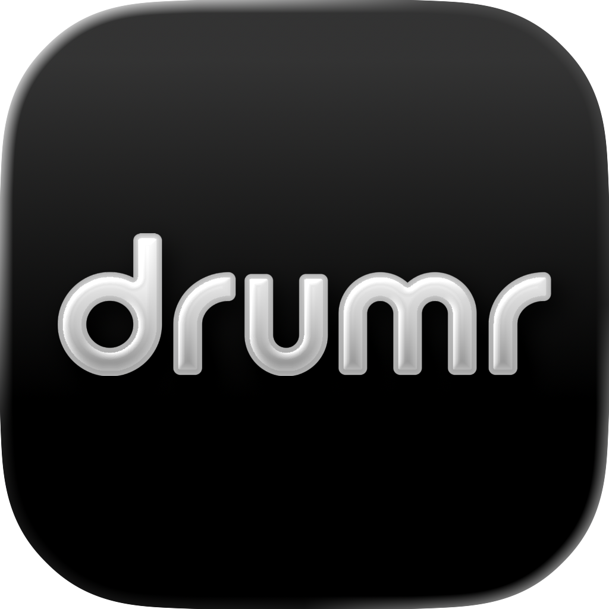

Drumr - Learn & Practice Drums
Drum Kit & Marching Snare
Take your drumming skills to new heights with Drumr. Designed for everyone from first-time drummers to seasoned pros, Drumr offers an extensive library of drum kit and marching snare scores, interactive practice tools, and professional-grade features—everything you need to build confidence, refine technique, and play your best.